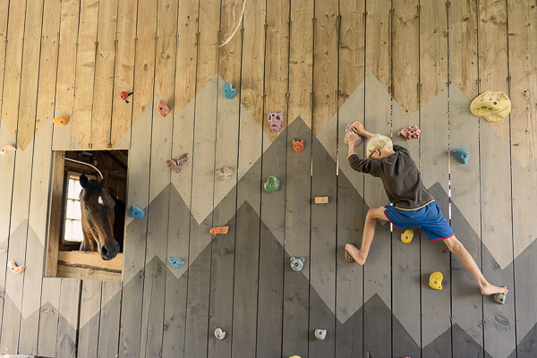
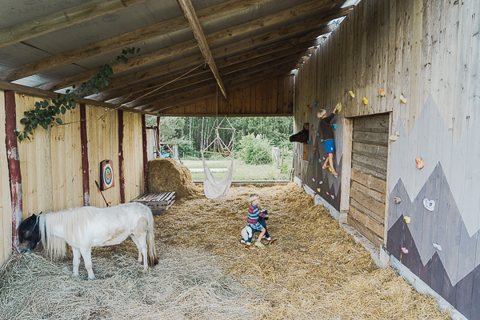
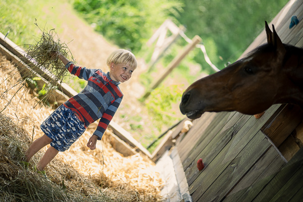
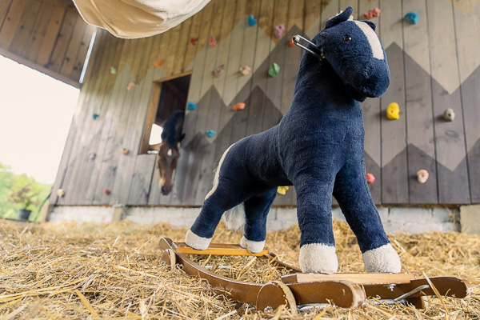
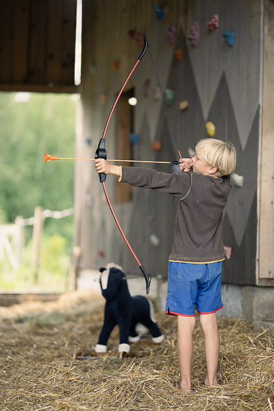
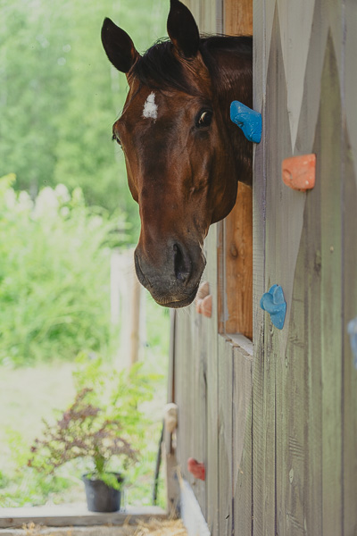
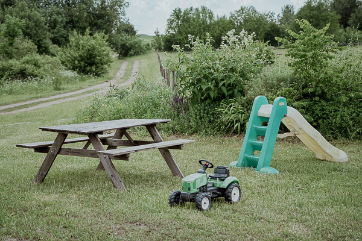
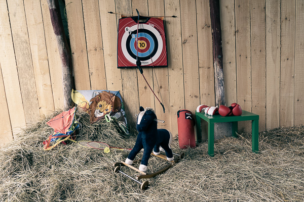

Kviečiame į Žirgų Namus norinčius švęsti savo šventę patyrinėjant save, savo draugus ir mus visus supančią gamtą. Santykio ir susitikimo metu gimsta tobulėjimas ir augimas.
- Žirgų ir ponio vaišinimas morkomis, obuoliais, šukavimas
- Laipiojimo sienelė
- Badmintono raketės
- Dideli muilo burbulai (papildomai kainuoja 10 eur)
- Bokso kriaušė
- Aitvarai
- Profesionali fotosesija (papildomas mokestis)
- Hamakai
- Patyriminis žygis į tikrą aukštapelkę ieškoti bebrų namų, ragauti spanguolių, uostyti gailių, grybauti, pamatyti, kaip žydi musėdra saulašarė (sezoniškas pasiūlymas, papildomas mokestis)
- Patyrimas bitininkaujant (sezoniškas pasiūlymas: nuo balandžio iki rugpjūčio), papildomas mokestis
Erdvėje rasite stalą su suolais, staliuką, kėdžių, virdulį, rozetę.
Kaina be programos, tik naudojimasis erdve su trumpu supažindinimu su saugumo taisyklėmis su žirgais: 2 val. 80 eur.







